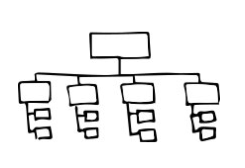

How to Make Sense of Any Mess
I listened to Abby Covert speak at an event in New York a while ago and was so impressed with her and her book that I bought it on the spot. The book is an informal, light, and short collection of different ways to communicate information and flows. While the examples are lightly weighted towards people who work in service or product design, I actually think Covert's breakdowns are approachable enough that basically anyone who has to put presentations together at work may benefit from reading it. For example, below are 3 small doodles interspersed with her text as quick examples of communicating a journey, a structure, and a system.

Covert goes well beyond diagrams. She tackles content strategy, taxonomy, research methods, and analysis. Perhaps my favorite is how she pre and endcaps the book, discussing intent, realities, constraints, and adjusting. If you work in at all complex organization, the following passage may ring true:
No matter what the mess is made of, we have many masters, versions of reality, and needs to serve. Information is full of history and preconceptions. Stakeholders need to: Know where the project is headed See patterns and potential outcomes Frame the appropriate solution for users. Users need to: Know how to get around Have a sense of what's possible based on their needs and expectations Understand the intended meaning It's our job to uncover subjective reality. An important part of that is identifying the differences between what stakeholders think users need and what users think they need for themselves.If you can't tell, this is one of my favorites. I believe that it's simple and clear tone makes it a valuable read even for experts who may have all these tools under their belt, but may not necessarily be able to explain them to non-experts.